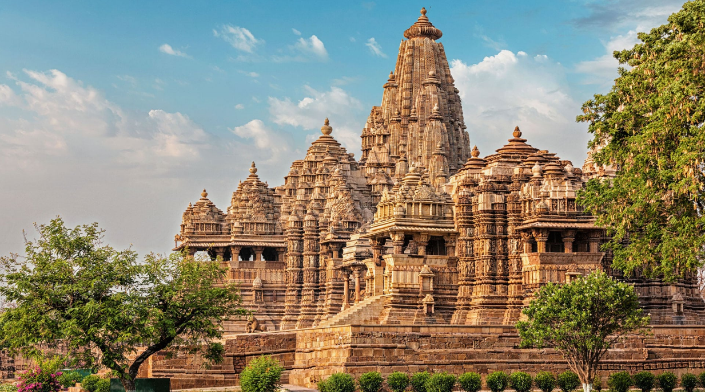
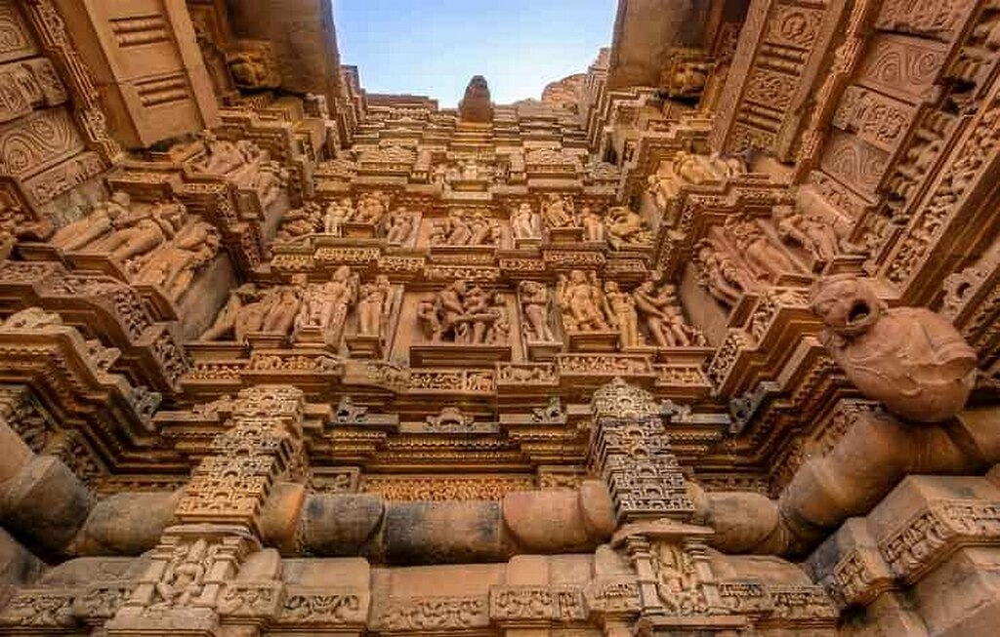
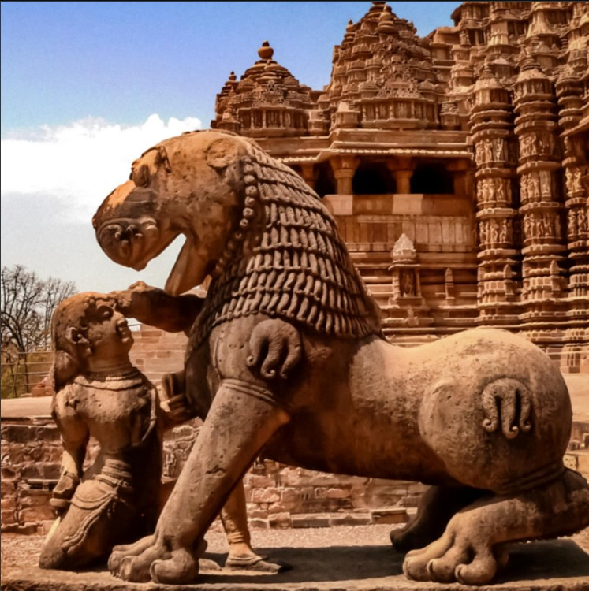
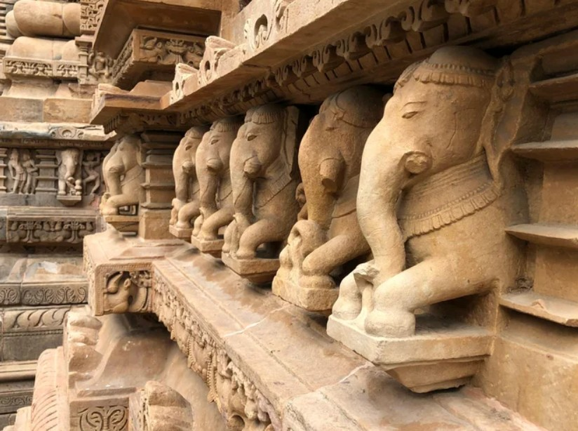
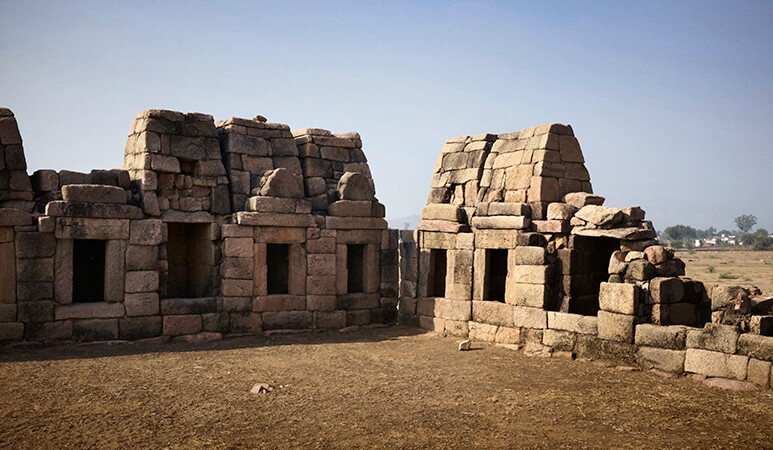
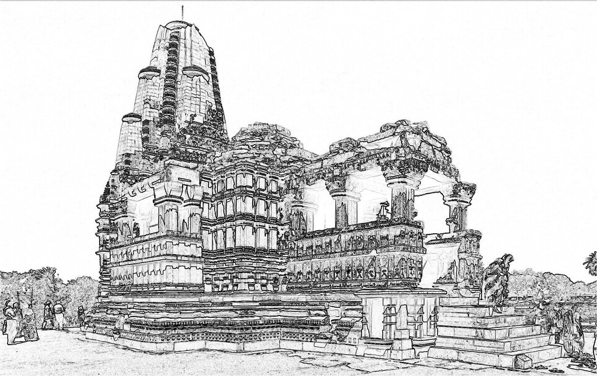
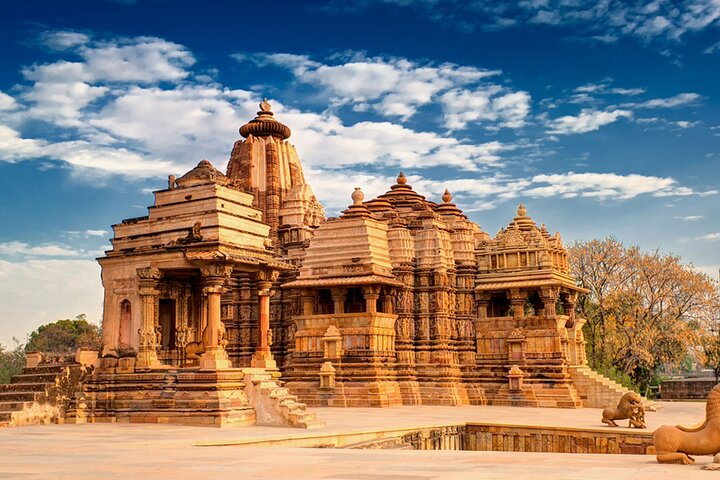

Khajuraho - The City of Gods

A Legacy Carved in Stone
Welcome to Khajuraho, a UNESCO World Heritage site renowned for its stunning temples adorned with intricate and sensuous sculptures. Once the capital of the Chandela dynasty, this ancient city is a testament to a time when art, spirituality, and life were celebrated in unison. The temples of Khajuraho are not just architectural marvels; they are a canvas depicting the life and beliefs of a civilization that flourished a thousand years ago.
The name "Khajuraho" is believed to be derived from the Hindi word 'khajur', meaning date palm, which once grew abundantly in the region. Today, it stands as a symbol of India's rich cultural and artistic heritage, drawing visitors from across the globe to witness its timeless beauty.
As we celebrate our union in this historic land, we are surrounded by stories of love, devotion, and human expression carved into every stone. It is a place where the past and present merge, creating a magical backdrop for our new beginning.
Architectural Magnificence
The temples of Khajuraho are a breathtaking symphony of Nagara-style architecture and intricate craftsmanship. Built between 950 and 1050 AD by the Chandela rulers, these structures are famous for their harmonious integration of sculpture with architecture. The detailed carvings depict mythological stories, celestial beings, and scenes from daily life, celebrating human emotions in their purest form. The Kandariya Mahadeva Temple, with its soaring shikhara, stands as the grandest example of this artistic achievement.

Rise of the Chandelas
The Chandela dynasty emerged as a dominant power in Central India. They established their capital at Khajuraho and began a period of prolific temple construction, transforming the city into a major cultural and religious center.


The Golden Era of Construction
This century marked the zenith of temple building. It is believed that over 85 temples were constructed, each a masterpiece of art and devotion. Rulers like Yashovarman and Dhanga commissioned some of the most famous temples, including the Lakshmana and Vishvanatha temples.
Decline and Obscurity
Following the decline of the Chandela dynasty and subsequent invasions, Khajuraho fell into obscurity. The temples were abandoned and gradually became overgrown by the surrounding forest, hidden from the world for centuries.


Rediscovery by the British
In the 19th century, a British engineer, T.S. Burt, rediscovered the lost temples. His accounts brought this architectural treasure to the attention of the world, initiating efforts for its preservation and study.
A Global Heritage Site
Recognized as a UNESCO World Heritage site, Khajuraho is now protected and celebrated as one of the most significant artistic legacies of ancient India. Of the original temples, 25 remain, continuing to inspire awe and wonder in all who visit.
